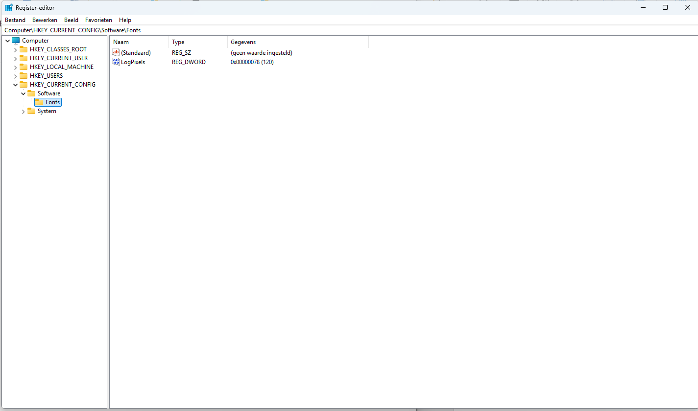

Registry Editor
De tool waarmee je de Registry beheert, heet:
regedit
Registry Editor openen
- Druk op Win + R
- Typ:
regedit - Druk op Enter
- Bevestig indien nodig de toegang als administrator
Overzicht van de interface
- Linkerkant → boomstructuur met keys en mappen
- Rechterkant → values binnen een geselecteerde key

Veelgebruikte acties
Keys beheren
- Aanmaken: rechtsklik → New → Key
- Verwijderen: rechtsklik → Delete
Values beheren
- Aanmaken: rechtsklik → New → kies het type
- Bewerken: dubbelklik op de value
- Hernoemen: rechtsklik → Rename
Exporteren en importeren
- Exporteren: rechtsklik op een key → Export
- Importeren: dubbelklik op het
.reg-bestand of File → Import
Praktisch voorbeeld: een programma automatisch starten bij het aanmelden
Doel
In dit voorbeeld leer je hoe je ervoor zorgt dat een programma automatisch start wanneer een gebruiker zich aanmeldt bij Windows.
👉 We gebruiken Notepad als voorbeeld.
Stap 1: Open de Registry Editor
- Druk op Win + R op je toetsenbord
- Typ
regedit - Druk op Enter
- Klik op Yes wanneer erom gevraagd wordt (administratormachtiging)
📌 De Registry Editor wordt geopend.
Stap 2: Ga naar de juiste locatie
Navigeer naar het volgende pad:
HKEY_CURRENT_USER\Software\Microsoft\Windows\CurrentVersion\Run
📌 Op deze locatie staan programma's die automatisch starten wanneer de gebruiker aanmeldt.
Stap 3: Een nieuwe value aanmaken
-
Klik met de rechtermuisknop in het rechterpaneel
-
Kies New → String Value
-
Geef ze de naam:
Notepad
Stap 4: Het pad naar het programma instellen
- Dubbelklik op de nieuwe value
- Geef het volgende pad in:
C:\Windows\System32\notepad.exe
- Klik op OK
📌 Hiermee vertel je Windows welk programma gestart moet worden.
Resultaat
✅ Telkens wanneer de gebruiker zich aanmeldt, start Notepad automatisch.
Extra uitleg
- De Run key wordt gebruikt om programma's te starten bij het aanmelden
- Door HKEY_CURRENT_USER te gebruiken, werkt het enkel voor de huidige gebruiker
- Je kan op dezelfde manier meerdere programma's toevoegen
⚠️ Let op: te veel opstartprogramma's kunnen het systeem vertragen.